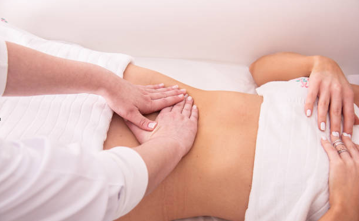

Tratamientos corporales
Masajes Post Operatorios
Un masaje postoperatorio es una forma suave de masaje que aumenta el flujo sanguíneo y promueve la recuperación al estar especialmente enfocado al sistema linfático. El sistema linfático ayuda a procesar los desechos y absorbe los líquidos. Después de una cirugía, estos líquidos pueden endurecerse, lo que a menudo es doloroso. Un masaje postoperatorio previene y trata este endurecimiento de los líquidos al reducir la inflamación y favorecer la circulación en la zona afectada.El drenaje linfático post operatorio es una de las mejores fórmulas para evitar las molestias e inflamación que puede surgir tras la cirugía.

Tratamientos reductivos
Los tratamientos estéticos no invasivos ofrecen diversas alternativas para mejorar la apariencia corporal y combatir problemas específicos como grasa localizada, flacidez y celulitis. Procedimientos como la cavitación, ultrasonido, carboxiterapia y electroestimulación ayudan a tonificar el cuerpo, reducir medidas y revitalizar la piel. Estas técnicas, al ser seguras y no quirúrgicas, permiten obtener resultados visibles, como glúteos más firmes y una figura más moldeada, formando parte de paquetes completos como los siguientes:


![ Masajes de drenaje linfatico post operatorio corporal Consiste en una serie de maniobras suaves, ligeras y concretas y con un orden determinado que buscan ayudar a la linfa, que es la que provoca la inflamación, a que llegue a sus nódulos correspondientes y al torrente sanguíneo. Por lo tanto, este masaje ha de estimular los nódulos principales y guiar la linfa para que pueda volver a su sitio para drenar el liquido. Opcionalmente puede ser acompañado de algún dispositivo de ultrasonidos y carbpxiteraía que mejore el resultado final.](images/img_6.jpg){kind=link}
![Fast reduction es un tratamiento no invasivo ideal para eliminar la grasa localizada mediante la cavitación, que utiliza ultrasonidos de baja frecuencia para disolver las células adiposas. También incluye las Ondas Rusas, que tonifican los músculos mediante electroestimulación, y la carboxiterapia, que oxigena las células con infiltraciones de dióxido de carbono. Estos procedimientos ayudan a reducir volumen, disminuir la celulitis, mejorar la firmeza y elasticidad de la piel, logrando resultados visibles y duraderos.](images/img_5.jpg){kind=link}